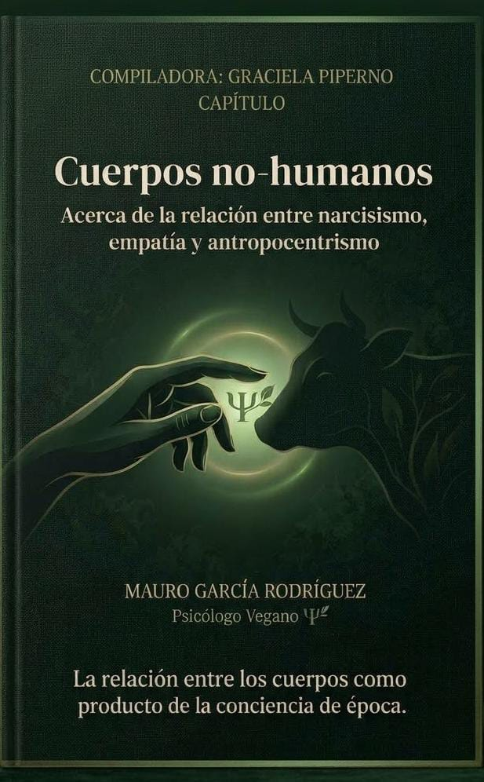

Capítulo de LibroCuerpos no-humanos
Un abordaje psicoanalítico sobre el narcisismo residual, la empatía y la emancipación ética más allá de nuestra especie. Incluye lectura digital y PDF.
$5.000 ARS
/ $5 USD (Exterior)